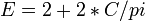

De: La Frikipedia, la enciclopedia extremadamente seria.
De: La Frikipedia, la enciclopedia extremadamente seria. De: La Frikipedia, la enciclopedia extremadamente seria.
«إذا كنت تستطيع قراءة هذا كنت ابن ساقطة الذي من الأفضل أن تفعل أي شيء سخيف الخراء»
~ Mahoma sobre el fin del mundo
«сргзфкьу дф зщддф ыщ сфикщтывы»
~ El patriarca de la iglesia ortodoxa sobre el fin del mundo
«Condenati summus»
~ Benedicto XVI sobre el fin del mundo
«Wenn ist das Nunstück git und Slotermeyer? Ja!Beiherhund das Oder die Flipperwaldt gersput»
~ Benedicto XVI viendo que el latín no lo entiende ni dios
«El fin del mundo va a llegaaaaaaaar»
~ Fernando Arrabal sobre el fin del mundo
«Arrepentíos, pecadores, y transferirme varios leros a mi cuenta corriente»
~ Predicador callejero sobre el fin del mundo
«¿¡Comor?! No puede ser, pecadorr»
~ Chiquito de la Calzada sobre el fin del mundo
«¡¡¡¡¡¡¡¡¡Esta noche si que cenamos en el infiernooooooooooooooooooo!!!!!!!!»
~ Leónidas sobre el fin del mundo
«Grñap agrñapfs»
~ Krusher sobre el fin del mundo
«Me recuerda a Evangelion»
~ Otaku sobre el fin del mundo
«Esta noche, seguro.»
~ Rorschach todos los días, sobre el fin del mundo
«Se acerca el fin del mundo, vende tu casa y dale toda tu plata a la congregación»
~ Pastor Evangélico aconsejando a sus fieles sobre el fin del mundo
El fin del mundo, también conocido como "Apocalipsis", "Armageddon", "La puta madre, ya cagamos" o "Estamos jodidos", se refiere a la fecha de caducidad de un planeta, en el que todos los seres vivientes de este quedan hechos mierda por cualquier motivo. Generalmente cada 10 o 20 años aparece un profeta que sale a las calles vestido solo con un cartón que tiene escrito "el fín ce hacerca" con errores ortográficos avisar lo obvio para qué, 1000 millones de años después no haya pasado nada malo, a excepción de la muerte de Bruce Lee. Solo para citar algunos ejemplos, el Fin del Mundo podría suceder cuando:
Se deduce que es poco probable que exista el día del Juicio, ya que viene vaticinado en la Biblia, fuente inagotable de errores conceptuales e históricos.
Ciberjesús bajará del cielo y, tras reunir a toda la humanidad en el Salón de Actos de una Escuela de Ingeniería (probablemente, la de la Universidad de Cádiz), soltará un aburrido discurso/sermón de 3 horas (con algún que otro típico chiste de aperitivo para caldear el ambiente). Después del turno de preguntas, dirá quienes irán al Cielo, al Infierno, y a Silicon Valley.
Cuatro señores delgaduchos montados en caballos esqueléticos bajarán del cielo y se los llevarán(los 4 Jinetes del Apocalipsis). Serán miembros del infierno Paco Porras, los creadores de Google Earth, y Bill Gates (por inaugurar la más temida herramienta del mal junto con Google Earth: Hasecorp). Al resto, Jesús los enviará a Silicon Valley (reconocido por el Vaticano como el limbo). Todo esto, claro está, si viven hasta que llegue el momento.
Así dice la biblia, escrita por Diox y leida por mí:
En el fin de los tiempos, después de la tercera guerra mundial, la ultima especie humana, el gnomo simpsus, decide matar a sus semejantes (a palos y piedras), en la celebración del año de la pera. Despues de arduas batallas, los monjes dioxistas deciden terminar con la guerra, usando su arma mas poderosa, un gas de ya saben quien almacenado con excremento de wombat por muchos años, finalmente es lanzado a las ultimas tribus frikis, desintegrándolas junto con sushilandia.
El final del mundo empezará cuando Dios no sea capaz de evitar que se rompa el condón del Papa mientras viola a una monja. En ese momento se engendrará en Anticristo que nos obligará a usar Windows, a ver el canal 24h Gran Hermano y nos impedirá dominar el mundo. La prueba de que se engendrará de ese modo el hijo del demonio es clara: el anticristo tendrá los genes del Papa, los genes son ciencia, la ciencia es maldad pura y la maldad pura es el demonio. Entonces, Chuck Norris llegara para destruir a Dios, pero Dios usara su magia, convinada con la de Satan y la Ratzinger Z, pero de una patada voladora, Chuck los vencera. Con sus ultimas fuerzas, Dios resucitara a Bruce Lee, el unico que a logrado esquivar la patada de Chuck, y unido a Dios, venceran a Norris. Luego de la muerte de Chuck Norris, Dios y Bruce lee mataran a Satan, y mas tarde Dios matara a Bruce para asegurarse de ser el unico rey del mundo, pero los Gothic Lolita, aran un ritual de invocacion para traer a su propio Dios: Gothic Lolita, Decorer, Pokemones, y los Otaku sobrevivientes invocarán a sus divinidades:
Al mismo tiempo, los pocos seguidores de Frikipedia que quedan revivirán a sus dos divinidades:
Así, tres fuerzas oponentes se enfrentan por el poder del mundo: Ratzingers Z, los Frikipedistas y los pendejos de las tribus urbanas.
El primero en llegar al castillo de Ratzinger fue Chuck Norris (como era de esperarse), y de una de sus patadas voladoras los matará. Luego, el Monstruo Espagueti Volador asumirá el poder, pero inconforme con ello, Chuck Norris también lo mata. Al enterarse de la muerte de Ratzinger los Otakus, Decorer y Gothic Lolita (siendo que los tres aman las boludeces japonesas), mataran a los Emo, Flogger y Pokemones, incluyendo a Cumbio y Marco (aunque ellos los creian invencibles. Ellos al mando de Rey Ayanami y Shinohara Tomoe se enfrentaran a Chuck, aunque Chuck mata a varios Otakus gay con su mirada, Shinohara tomoe canta una de sus canciones, destrozándole su oido interno(la primera vez que Chuck Norris siente dolor =o), por lo Chuck ya no podra dar sus patadas voladoras. Aprovechando esto, los Otakus matan a Chuck, pero antes de morir, Chuck llega a ver a Rey Ayanami y a Shinohara a los ojos, por lo que ambas mueren. Desde entonces, un unico rey mundial toma el poder, un decorer llamado Niu (en un principio iva a ser Shinohara, pero como se murio ponen a este de repuesto).
Al enterarse de esto, todo el mundo (menos los Otaku) comienzan a suicidarse, lo que ellos le daran el nombre de primer impacto. Más tarde, los Otakus comienzan a se los unicos vivos en la tierra, lo que llamaron como segundo impacto. El final del mundo se da cuando sucede el tercer impacto, en el, los Otaku mueren por falta de sexo y gente que haga series nuevas de anime. Algunos se masturban con Hentai, pero terminan muriendo, el único sobreviviente fue el rey Niu, que se masturba con la última foto existente de Chuck Norris.
Pero al ver en la foto los ojos de Chuck, el rey Niu muere, entonces la foto de Chuck absorbe la energia vital de el rey Niu, logrando asi su resureccion, Chuck revive, da una de sus patadas giratorias destruye el universo, y lo vuelve a crear sólo para poder destruirlo de nuevo.
Luego de que la tele es destruida, tu ya estaras muerto idiota, asi que deja de llorar como imbecil los diocistas y chucknorristas se unen para destruir a sus enemigos, quienes se han procreado con wombats y pokemonizados para convertirse en super barlogs-mutantes-metroids, que comienzan a luchar con los diocistas y chucknorristas por 7 años, hasta que la mas grande horda de emos jamás vista los capturan para usarlos como sacrificio al gran emorragio, el cruel, su dios, y jack squeleton, el angel de la muerte.
La tierra se ensombrece, dios y chuck están frente a Diox y la tortuga, que dejó la tierra apoyada en una mesa, dispuestos a la batalla final, los delfines se esconden, y satanás con sauron y darth vader ven todo desde la estrella de la muerte. Cuando se va a dar el primer golpe, la simple presencia de tanta materia junta nos manda al retrete nos desintegra cuanticamente y la teoría de la relatividad se convierte en esto:

El colapso tiempo-espacio generado por el golpe causa una realidad cuántica relativo-compleja decadimensional biversal matricialmente elevada a la potencia del elegido llevando energía transdimensional a la fuente colapsando internet y produciendo un flujo positrónico continuo de entropía en regresión y validez de leyes como las de un bujero negro común.
En otras palabras para imbeciles con c.i de rata, lo imposible se vuelve real y los emos mueren misteriosamente dejando manchas rojas sin explicación aparente, los esparragos se buelven tontos y los zombies listos.
A dos años del fin, la energía oscura comienza a colorearse, descubriendo que es en realidad oscunio, un elemento no descubierto en la tabla periódica, que combierte en neuronas la grasa, haciendo que los hombres se buelvan genios y decidan matar a los delfines, causando la peor masacre de la historia (de humanos, claro), y haciendo que microsoft se extinga por siempre.
Huyendo del cielo en la batalla, el sol decide ir a la tierra, destruyendo el hagua y a los delfines, y acabando con los animales marinos no pokemonizados, y la luna, oviamente productora de obscuridad, decide huir también, pero como olvidó el bloqueador solar, se va al otro lado de la tierra, donde los zombies aprovechan para hacer cosas peredastas y pervertidas con orcos y clones y tu trasero, haciendo que la tierra (que es mas grande que el sol, ya que la luna se be igual de grande que el y es mas pequeña)gire más de prisa, enviando lejos a los dós y chocándolos, lo que hace que se aniquilen y produzcan mucho ruido, pero sin luz ni sombra, la tierra se vuelve gris.
El vencedor de la batalla del cielo, que no puede ser revelado a mortales, decide salvar a los últimos humanos, a dos wombats, a medio zombie y a un toro, destruyendo después la tierra con las armas atómicas decomisadas a los humanos en la tercera guerra mundial (y se dice que algo de reggeton tambien), y crea un nuevo planeta, Robonia, donde los emos no existirán y todas las mujeres serán como samus y los hombres como el bueno de tu barrio, los mares serán de coca o pepsi, y la droga curará el cancer y el cerebro, este será el fin, el día será la luz del nuevo sol, mas bonito, y la noche no existira salvo para tener amor, y la poligamia será premiada.

|
Será entonces, y solamente entonces, cuando Él vendrá; cuando los |

|
Sabemos de buena tinta, debido a numerosos y rigurosos estudios hechos por eminentes científicos,que el fin del mundo se producirá el 11 de Noviembre del año 4000. Para llegar a esta conclusión nos hemos basado en:
Vamos, que todo eso da 4000.
En concordancia tanto con La Profecía como con los estudios expuestos, sabemos que, en efecto, algo malo pasará el día 11 de noviembre del años 4000. La Tierra se partirá por la mitad o vete tú a saber. En cualquier caso, no te preocupes, La Frikipedia está aquí para ayudarte.
En primer lugar, consideremos que, como mucho, una persona puede vivir un siglo y una década. En segundo lugar, llamemos "A" al año en el que tú, lector, te has parado a leer este...artículo.
No apures, puesto que ya estarás muerto y por tanto no asistirás a aquella obra de arte catástrofe. Ahora que te has enterado de esto, puedes:
Bueno, tú no te preocupes (o sí, dependiendo de si antes te has puesto a llorar de alegría o de tristeza), puesto que no vas a llegar al año 4000. Sin embargo, si tus hijos han nacido este año, yo que tú velaría por ellos, por si acaso duran justo 110 años.
Este no se trata sino del caso del fifti-fifti, pues puede que mueras antes del año 4000 o puede que seas fuerte y aguantes (con los adelantos tecnológicos de los que debes gozar digo yo que la probabiliad de que dures 110 años por lo menos debe rondar el 50%).
En el mejor de los casos (suponiendo que es enero) te quedarán alrededor de 11 meses de vida. La Frikipedia te recomienda que
Pon los cuernos en alto empieza a gritar los cachos de las canciones de No bull de Eric Carr vengan a recogerte y te lleven al rock in rio eterno en el que solo permiten grupos de Jarabe de palo (Dios,como les odio) ni a el canto del loco.
Existe una creencia general que el universo está lleno de culturas inteligentes (más inteligente que la raza humana) y que en cierto tiempo trazarán una Supercarretera de Comercio Galáctico que pasará por la Tierra. Por tanto, la tierra será desechada para dar paso a la gran flota de naves de comercio debido a que la tierra parece una pequeña manzana podrida (debido a la contaminación y conducta de sus habitantes).
Autor(es):